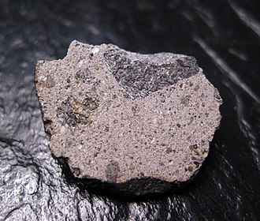
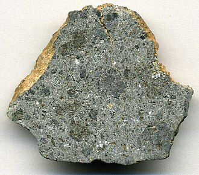
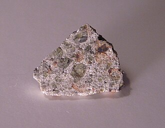
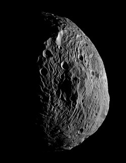

Vesta as seen by Dawn
Vesta is the second largest asteroid in the asteroid belt.
It is named after the Roman goddess of the home and family.
It is believed that Vesta used to be in hydrostatic equilibrium and still has differentiated internal structure, but lost its round shape after several collision events that also created the Vesta family.
Located within the Rheasilvia crater is one of the tallest known peaks in the Solar System, that is almost as tall as Olympus Mons on Mars.
Vesta has been visited by the Dawn probe, which has also explored the biggest asteroid, Ceres.
In 1798 Franz Xaver von Zach and 24 more astronomers organized the United Astronomical Society (dubbed the "celestial police"), originally tasked with compiling more precise star catalogues, but later began an organized search for a planet between Mars and Jupiter, due to the gap between them.
This was suggested by the recently formulated Titius-Bode law, according to which the distances of planets followed a progression.
It also led to the discovery of Uranus beyond the orbit of Saturn.
Three years after their first congress, Ceres was discovered in this gap and was refered to as a planet.
However, other members of the "celestial police" discovered other "planets" like Pallas and Juno, and they started to suspect that Ceres was not a planet.
Thus, a new class of objects was created - asteroids.
One of these early objects was Vesta, discovered by Heinrich Olbers in 1807.
The discovery was made after Olbers discovered Pallas in 1802.
He thought that Pallas and Ceres were related and that they were remnants of a larger planet.
A search near the intersections of the two to discover possible fragments lead to Vesta, which was only a coincidence.
Vesta is named after the Roman goddess of the home and family.
Since Olbers had already discovered Pallas, the naming rights were given to German mathematician Carl Friedrich Gauss, who took part in the search for Ceres and Vesta.
In Greek, the asteroid is refered to by the name of the Greek equivalent of Vesta - Hestia (Εστία).
This means that it has the same name as the asteroid 46 Hestia.
In Chinese, Vesta is called the "hearth-god star" (灶神星, Zàoshénxīng).
Orbit and rotation
Vesta orbits around the Sun for 3.6 Earth years.
It is located in the inner asteroid belt at 2.36 AU from the Sun.
The inclination is 7.1°, almost as much as that of Mercury.
The eccentricity is 0.09.
The rotational period of Vesta is relatively fast at 5.3 hours.
It has a axial tilt of 29°.
Several asteroids share the same charachteristics as Vesta.
This family of asteroids is the result of the collisions that disfigured Vesta when it was round.
Shape and size
Vesta is the second largest and most massive asteroid.
It has a mean diameter of 525.4 km and dimensions 572.6 km × 557.2 km × 446.4 km.
It is close to an oblate spheroid, but is not round enough to be considered a dwarf planet.
This is because of the collisions that changed the shape of Vesta.
Vesta is also not in hydrostatic equilibrium, which makes it retain its irregular shape.
Vesta is partially differentiated - a remnant from the time it was in hydrostatic equilibrium and round.
The core is thought to consist of iron and nickel and is estimated to be between 90 and 220 km.
Around it is a rocky mantle rich in mafic minerals like olivine.
The crust is basaltic, similar to the howardite-eucrite-diogenite meteorites, believed to originate from Vesta.
Eucrites are mostly calcium-poor pyroxenes and calcium-rich plagioclase, while diogenites have magnesium-rich orthopyroxenes and some olivine and plagioclase.
These two are components of the breccia-textured howardite.
Howardites are the uppermost crust layer, followed by eucrites, and diogenites are the deepest.



Howardite, eucrite, and diogenite meteorites, which originate from Vesta. Source one, two, three

The large Rheasilvia crater with its central peak
Vesta is a stony V-class (Vestoid) asteroid, which means that the surface is comprised of basalt.
There are two significant features on the surface of Vesta - Rheasilvia and Veneneia.
These two are large impact craters around 500 and 400 km in diameter respectively, located around the south pole.
These two impacts are responsible for the irregularity of the shape of Vesta.
The central peak of Rheasilvia is one of the tallest in the Solar System at 23 km, while the crater rim is 31m above the crater bottom.
The Rheasilvia impact occured around only 1 billion years ago, making it relatively recent.
Other large craters are much smaller, including the Feralia Planitia.
It is unclear whether this basin was formed by one or several impacts, but since then it has degraded.
Newer features have carved the surroundings - Divalia and Saturnalia Fossae.
They are likely a result from the Veneneia impact event.
Surrounding the large impact basins are the highland regions.
They are heavily cratered and includes the highest point within Vestalia Regio.
Brumalia Tholus within this region is one of the very few magmatic features on Vesta, representing a laccolith - a dome-shaped intrusive structure.
Outside Vestalia, three close craters - Marcia, Calpurnia, and Minucia - make up a recognisable chain that resembles a snowman.
Of all the asteroids, it appears the brightest on Earth since it is the second largest, and is relatively bright and close to the Sun.
Vesta has been observed from Earth before it was visited by a spacecraft.
Hubble Space Telescope imagery was able to differentiate the largest basins like Rheasilvia, Veneneia, and Feralia.
NASA's Dawn was the first to visit Ceres and Vesta, the two biggest asteroids.
During its Vesta orbiting phase, Dawn gathered data about its geology and surface for one year before heading to Ceres.
External links
{kind=link}
.jpg){kind=link}
{kind=link}